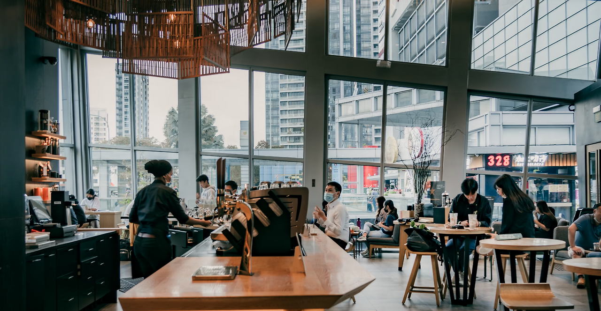

왜 스타벅스는 다른 카페와 다르게 느껴질까?
스타벅스에 들어가면 웬지 특별한 느낌이 든다. 단순히 커피를 마시러 온 게 아니라 '나만의 시간'을 찾으러 온 것 같은 기분이다. 이는 우연이 아니다. 스타벅스는 처음부터 '제3의 공간(Third Place)'이라는 UX 컨셉으로 설계되었기 때문이다.
'제3의 공간'이라는 개념은 1989년 사회학자 레이 올든버그가 처음 제시했다. 집(첫 번째 공간)도 직장(두 번째 공간)도 아닌, 사람들이 편안하게 모이고 소통할 수 있는 세 번째 공간을 의미한다. 스타벅스 창립자 하워드 슐츠는 1980년대 이탈리아 여행에서 에스프레소 바에서 사람들이 자연스럽게 모여 대화하고 시간을 보내는 모습을 보고 영감을 받았다. 단순히 커피를 파는 것이 아니라, 사람들의 일상에 스며드는 '제3의 공간'을 만들겠다는 비전으로 스타벅스를 키워나갔다.
스타벅스는 매장 설계부터 서비스까지 모든 것을 '제3의 공간' 경험에 맞춰 디자인했다. 매장 내부는 집처럼 편안하면서도 카페 특유의 활기찬 분위기를 동시에 제공한다. 다양한 좌석 옵션(소파, 바 테이블, 개인 좌석)을 배치해 혼자 오는 사람부터 그룹 모임까지 모든 니즈를 수용한다. 조명은 형광등 대신 따뜻한 간접조명을 사용하고, 재즈나 어쿠스틱 음악을 적절한 볼륨으로 틀어 사람들이 대화하거나 집중할 수 있는 환경을 조성한다.

바리스타는 단순히 주문을 받는 직원이 아니라 '파트너'라고 불리며, 고객과 긍정적 관계를 형성하도록 교육받는다. Wi-Fi 무료 제공과 전원 콘센트 배치는 디지털 노마드들이 장시간 머물 수 있게 하는 핵심 요소이다. 회전율을 중시하는 일반 음식점과는 정반대의 전략으로, 스타벅스는 오히려 사람들이 오래 머물기를 원한다. 최근 일부 고객의 과도한 활용으로 문제가 되고 있지만 이 전략을 포기하지는 않을 것이다.
가장 혁신적인 점은 스타벅스 전 세계 어느 매장을 가도 비슷한 '제3의 공간' 경험을 제공한다는 것이다. 서울의 강남점에서 느낀 편안함을 뉴욕의 타임스퀘어점에서도 경험할 수 있다는 것이다. 이는 단순한 인테리어 통일이 아닌, 공간이 주는 감정과 경험의 일관성인 것이다.
스타벅스의 '제3의 공간' UX는 라이프스타일 브랜드로의 전환을 보여주는 대표적인 사례다. 사람들은 커피를 사는 것이 아니라, 스타벅스라는 '경험'을 사는 것이다. 이것이 스타벅스가 전 세계 3만개의 매장을 통해 커피 문화를 바꾼 비밀이다.